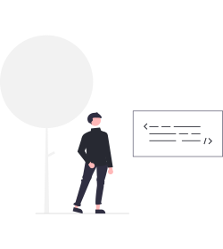
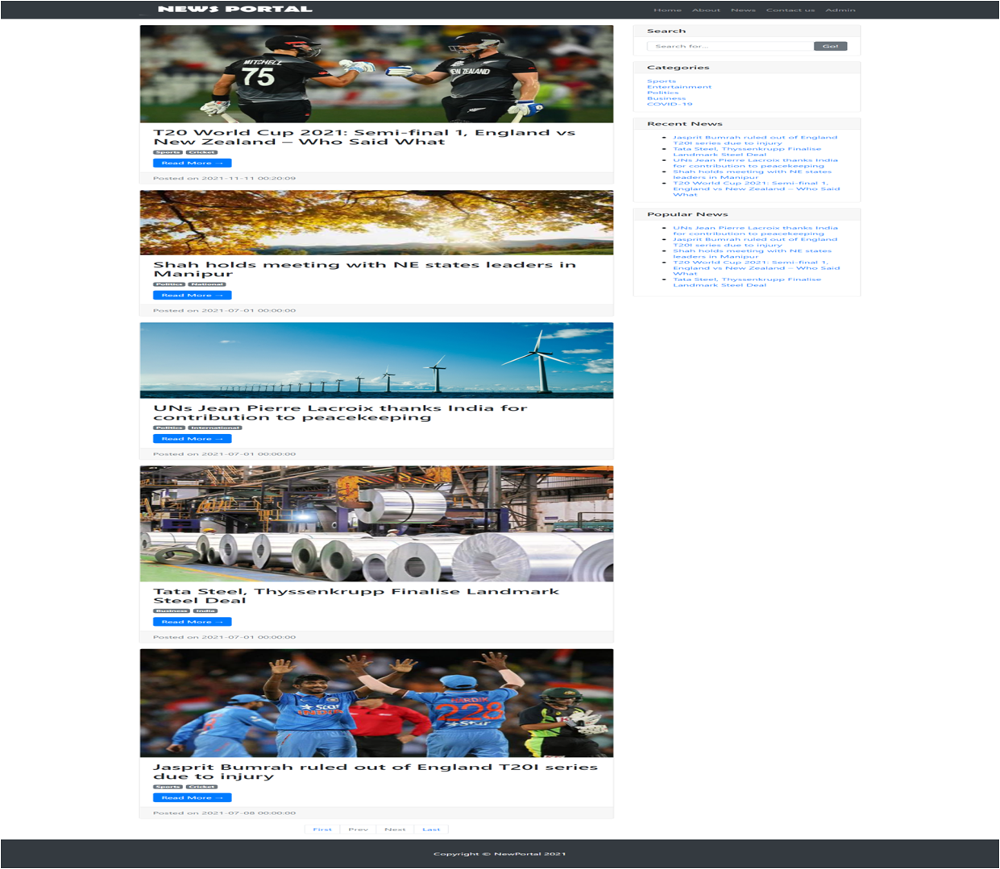
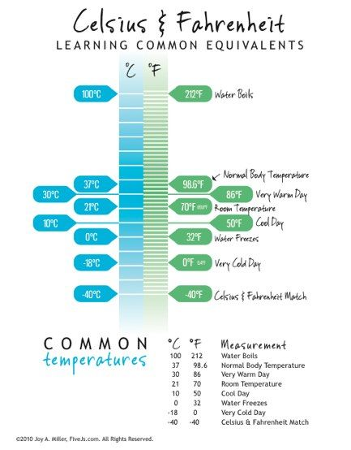

Sameer
My self sameer. Currently pursuing my engineering degree in Basaveshwara Engineering college from the department of information science and Engineering. I have good knowledge in programming languages 'C' , 'Java'and 'Python' . I have worked on front-development . I did my first internship on 'PYTHON - Machine Learning'.
Projects

Online News Portal System
It is a unique type of project,This project is helped to read news posts online.This project have multi-media features.
Go to project

Cafe-Cofee day
It is my small front end web based project. It uses only HTML and CSS .
Go to project

Farenheat to celcius converter
It is a javascript and html based operation kind of project .
Go to project